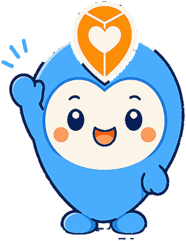
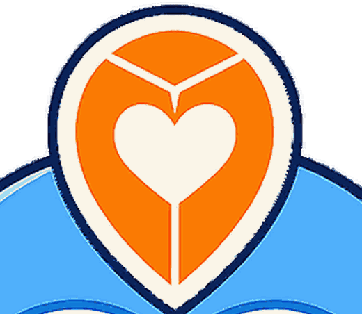
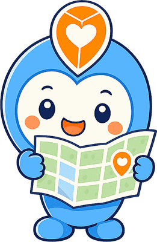
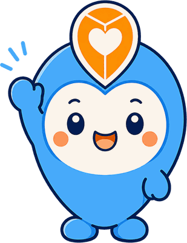

「きょうは、どこ行く？」
家族のおでかけが大好きな、ちょっと世話焼きのおでかけ案内役です。
こんにちは！ぼくは「おでまる」。
「子育ておでかけマップ」で、みんなのおでかけ先をさがすお手伝いをしています。
あたらしい場所を見つけるのが大すき。公園も、児童館も、水族館も、ごはんやさんも、地図で見つけるとワクワクします。
だから今日も、みんなに聞いちゃうんだ。「きょうは、どこ行く？」
おでまるのあたまのピンには、ちゃんと意味があります。

サイトのいろんなところで、おでまるはこんな顔をしています。



「今日どこ行く？」——休みの日のたびに、その一言で悩んでいた2児のパパがいました。
子どもと行ける場所は、調べはじめると意外と大変。おむつ替えはできる？ ベビーカーは入れる？ 雨でも大丈夫？ 調べているうちに、午前中が終わってしまう。
その悩みを引き受けるために生まれたのが「子育ておでかけマップ」で、そのサイトの案内役として生まれたのが、おでまるです。
だからおでまるのしごとは、ずっと変わりません。家族の「今日どこ行く？」を、いっしょに考えること。
おでまるといっしょにあそべるものを準備しています。